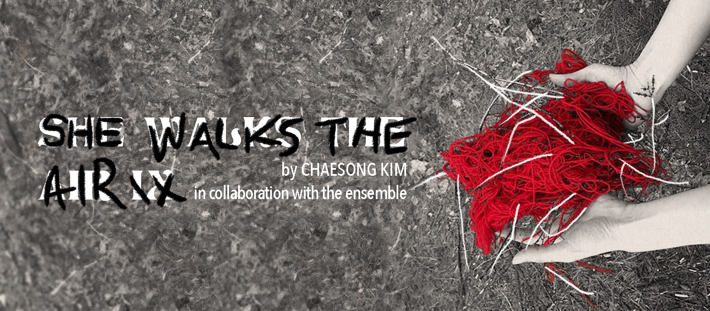

about
writing
directing
acting
press
contact

Columbia School of the Arts to Present SHE WALKS THE AIR IX
Broadway World
Columbia School Of The Arts Presents DER RING GOTT FARBLONJET
Broadway World
FOR MOLLY Will Be Performed at Columbia School Of The Arts This Month
Broadway World
All The World's A Screen
Wellesley Magazine
Theatre Student Kanika Vaish Directs 'Guards at the Taj' for SoHo Shakespeare Company
Columbia School of the Arts Blog
A staged reading of 'Ravayana'
HowlRound Theatre Commons
Ripples of change: Climate Change Theatre Action brings environmental awareness through theater
Columbia Spectator
On Guards
Wellesley Magazine
Upstage's 'Guards at the Taj' Mixes Darkness and Humor
The Wellesley News